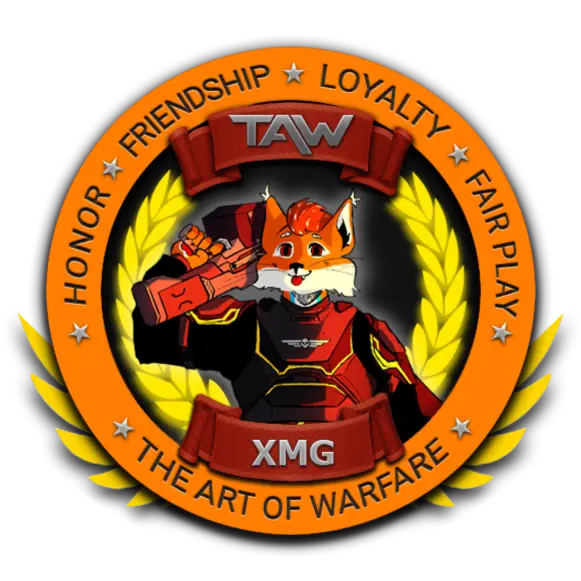

Project Aurora
Consultant → Canon Director → Executive Director 2,508 msgs/day RoleplayCold launch to a living 18+ world; ~99% of the build. Onboarding, governance, events, canon, security and the full visual identity. Open case study →
Seven years of communities, the full capability scope, references, and the writing underneath it.
Cold launch to a living 18+ world; ~99% of the build. Onboarding, governance, events, canon, security and the full visual identity. Open case study →
Built the staff team, then handed off to focus on new projects. Open case study →
Contributor to a 3,000+ member military-gaming network. Wrote a strategic analysis and a server-improvement consult focused on user psychology, retention and growth.
Launched after a teaser campaign; built political structure, lore and automated systems.
Rose through staff to faction co-lead; set staff-management and communication standards.
Built structured servers from scratch and organised staff teams.
This is not a six-item service menu. Aurora and Crimson show specific systems in context; this is the wider range of community work I can own, combine and adapt around the actual problem.
Diagnose the whole member journey, then design the structure that makes activity, trust and retention repeatable.
Turn founder-dependence and improvised moderation into clear ownership, trained people and operating standards.
Growth is a loop, not a shoutout: research, outreach, collaborations, events, follow-up and the retention layer behind it.
The visible layer matters too: writing, worldbuilding, identity and the infrastructure that keeps the server readable and resilient.
If it touches the member journey, the staff operating system, community growth or the community's voice, it is probably in my lane. The exact mix changes with the project — I would rather solve the real problem than force every client into the same package.
I help communities grow through targeted outreach, partnerships, and relationship-building — from identifying relevant communities and decision-makers to personalised outreach, follow-ups, collaboration planning, and long-term partnership development.
Finding and reaching the right communities, then turning that reach into members and real momentum — not vanity numbers.
Building long-term partnerships with communities, creators and studios — relationships that compound, not one-off shoutouts.
Identifying and approaching relevant Discord servers for cross-promotion, partner channels and collaboration.
Mapping the landscape — relevant communities, decision-makers and the right person to actually contact.
Planning and running collaborations that put your community in front of aligned, already-warm audiences.
A repeatable outreach process with personalised messaging, follow-ups and tracking — so growth is a system, not guesswork.
Working reference · Owner / founder“Joey built the backbone of both my communities. On Aurora he took an empty server to thousands of messages a day and designed the onboarding, rules and events that kept it running. On Crimson he built and trained a staff team that ran itself after he moved on. He's who I'd trust with community structure.”
MikeyOwner & Founder · Crimson Network / Project Aurora
Scope witnessed: launch · onboarding · governance · events · staff systems
Working reference · Strategic review“Clearly documented, showing exactly what needed to be adjusted or added, and which parts were your own design. Your critical analysis of our structure is a skill highly valued; I would most certainly recommend you for a position where you can express it to the fullest.”

Major XMGHDS Division · The Art of WarfareScope witnessed: strategic analysis · structure review · recommendations
I keep full community documents out of the public portfolio, but can send relevant examples for a role or project.
Launch posts, recruitment copy, event announcements and community-facing updates written to sound like the community — not corporate filler.
Request this sampleGovernance, onboarding instructions, staff documentation, event playbooks and operational writing designed to be used under pressure.
Request this sampleLong-form science fiction, setting documents and in-world material — alongside a completed SF novel of approximately 90,000 words and Cambridge C2 Grade A.
Request this sample